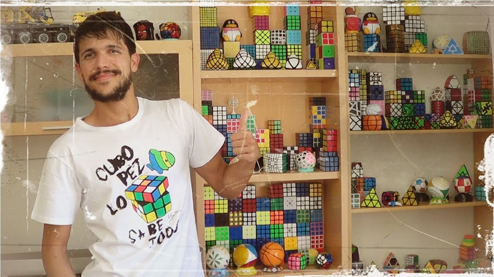

PERSONAJES IMPORTANTES
Existen muchisimas personas importantes entre creadores, modificadores, speedcubers,
creadores de contenido entre otros.
Los más importantes son:
br
Erno Rubik
Ernő Rubik (en húngaro: Rubik Ernő; Budapest, 13 de julio de 1944) es un escultor, arquitecto y
diseñador de la Escuela de Artes Comerciales de Budapest, autor del cubo de Rubik —aunque no
es el único rompecabezas mecánico que lleva su nombre—. También se destacan el Rubik's clock
(del cual no fue inventor, solo se convirtió en el propietario de la patente al comprarla) y
Rubik's Magic. Su padre, Ernő Rubik, era ingeniero especializado en diseños aeronáuticos, y
su madre, Magdolna Szántó, licenciada en literatura.
Tony Fisher
Tony Fisher es un diseñador de rompecabezas británico que se especializa en la creación de
rompecabezas rotacionales personalizados. Es reconocido por los entusiastas de los cachorros
como un pionero en la creación de nuevos diseños de rompecabezas y nuevas técnicas de
fabricación. En 2017, el Libro Guinness de los Récords Mundiales reconoció a Fisher como
el creador del cubo de Rubik más grande del mundo.
Themaoisha

Miguel Giménez mejor conocido como TheMaoiSha, es un youtuber español aficionado y coleccionista
de todo tipo de cubos de rubik, cuboides y demás puzzles similares. Sus vídeos se basan en
comentar cada cubo nuevo que compra, o comparativas con otros que ya tiene, mostrando, armando
y desarmándolos, haciendo unboxings, tutoriales, tops o críticas, mayormente, desde pirámides,
esferas, cubos con engranajes o imanes, cuboides que se deforman, retuercen, bloquean, hasta
puzzles con forma de cabezas y otros que pueden liberar algo al ser resueltos.
Cuby
Desde que era pequeño le gustaban los puzzles y cuenta que una vez cuando tuvo gripe, sus
padres le regalaron un 3x3 de Rubik's, que lo resolvió después de un tiempo. Aunque a él le
guste los cubos de Rubik, él ha dicho que nunca se meterá en el mundo del Speedcubing y que
solo le gusta porque es relajante y divertido.
Actualmente vive en Mallorca y dice que no piensa mudarse a otro sitio. Vive con "la becaria",
que apareció por primera vez en el Unboxing #100 y los suscriptores quieren que ella sustituya
a Cuby. Él mismo confesó en un directo de Twitch que se van a casar.
Feliks Zemdegs
Feliks Zemdegs (nacido el 20 de diciembre de 1995) es un patinador de velocidad australiano
nacido en Letonia que tiene un récord mundial (a partir de abril de 2020).
Compró su primer cubo en abril del 2008, inspirado en algunos videos tutoriales vistos en
YouTube. La primera vez no oficial que publicó en una conocida comunidad de speedolvers fue
un promedio de 19.73 segundos (14 de junio de 2008). En cuanto a los métodos de resolución,
Feliks utiliza el método CFOP / Fidrich para la resolución del cubo 3×3×3 y el método CLL
para el cubo 2×2×2. Ganó la primera competición en la que participó, The New Zealand
Championship (julio de 2009), con un promedio de 13.74 segundos en la ronda final. También
obtuvo el primer lugar en otras categorías: 2×2×2, 4×4×4, 5×5×5, 3×3×3, 3x3x3 con los ojos
vendados (con los ojos vendados) y 3x3x3 con una sola mano (con una sola mano). En la
siguiente competición, el Melbourne Summer Open (enero de 2010), registró su primer récord
mundial de promedios alcanzados con los 3×3×3 (9.21 segundos) y los 4×4×4 (42.01 segundos).
En 2011 logra bajar aún más lo que era el registro, llevándolo al tiempo de 5.66 segundos.
Actualmente su mejor marca personal no oficial es de 3.01 segundos.
Max Park
 Max Park es un solucionaor del cubo de Rubik estadounidense de ascendencia coreana que
anteriormente ostentaba el récord mundial de resolver cinco 3x3x3 (según las tradiciones
de la WCA), con 6,39 segundos, establecido el 23 de abril de 2017 en el OCSEF Open 2017.
Antes de esto, el récord había sido mantenido por el australiano Feliks Zemdegs, que lo había
mejorado 9 veces en 7 años de 9,21 segundos el 30 de enero de 2010 a 6,45 segundos. Park es
el único cuber además de Feliks Zemdegs que ha establecido el récord desde el 27 de septiembre de 2009.
También ha establecido varios récords mundiales al resolver los cubos 4x4x4, 5x5x5, 6x6x6 y
7x7x7, y 3x3x3 con una sola mano. Ha ganado 297 eventos en muchas competiciones de cubos de
Rubik.
Es un personaje importante ya que esta diagnosticado con autismo.
Max Park es un solucionaor del cubo de Rubik estadounidense de ascendencia coreana que
anteriormente ostentaba el récord mundial de resolver cinco 3x3x3 (según las tradiciones
de la WCA), con 6,39 segundos, establecido el 23 de abril de 2017 en el OCSEF Open 2017.
Antes de esto, el récord había sido mantenido por el australiano Feliks Zemdegs, que lo había
mejorado 9 veces en 7 años de 9,21 segundos el 30 de enero de 2010 a 6,45 segundos. Park es
el único cuber además de Feliks Zemdegs que ha establecido el récord desde el 27 de septiembre de 2009.
También ha establecido varios récords mundiales al resolver los cubos 4x4x4, 5x5x5, 6x6x6 y
7x7x7, y 3x3x3 con una sola mano. Ha ganado 297 eventos en muchas competiciones de cubos de
Rubik.
Es un personaje importante ya que esta diagnosticado con autismo.
Personajes Importantes
Inicio
Historia
Marcas y Modelos
SpeedSolving
Personajes Importantes
SpeedCubers
Otras Categorias